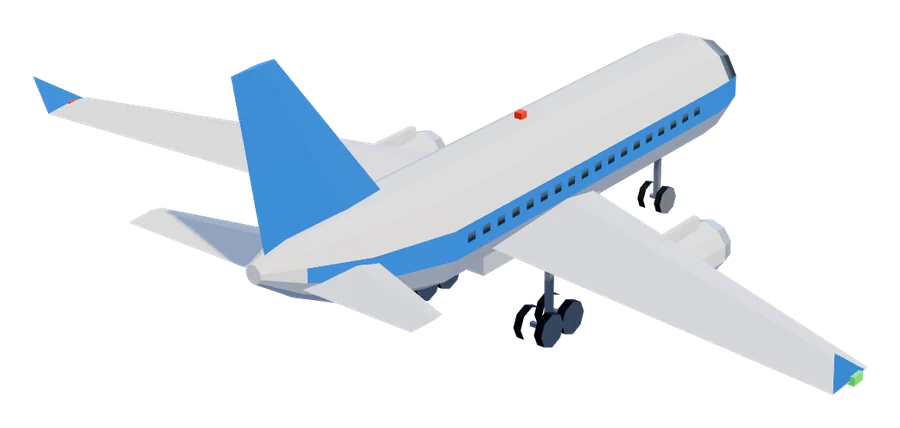

Avions
Tous les avions.
Rapides et chers. Les avions volent entre les aéroports.
 Petrel Mailplane1950 · 225 km/h
Petrel Mailplane1950 · 225 km/h Skylark Prop1950 · 255 km/h
Skylark Prop1950 · 255 km/h Stork Cargo Prop1958 · 245 km/h
Stork Cargo Prop1958 · 245 km/h
Albatross Jet1962 · 450 km/h Kittiwake Turboprop1968 · 330 km/h
Kittiwake Turboprop1968 · 330 km/h Pelican Freighter1975 · 390 km/h
Pelican Freighter1975 · 390 km/h Arrow Supersonic1977 · 840 km/h
Arrow Supersonic1977 · 840 km/h Condor Jumbo1978 · 510 km/h
Condor Jumbo1978 · 510 km/h Osprey Widebody1984 · 495 km/h
Osprey Widebody1984 · 495 km/h Falcon Narrowbody1989 · 465 km/h
Falcon Narrowbody1989 · 465 km/h Swift Regional Jet1996 · 480 km/h
Swift Regional Jet1996 · 480 km/h Leviathan Double-Deck2007 · 510 km/h
Leviathan Double-Deck2007 · 510 km/h Breeze Electric Commuter2030 · 285 km/h
Breeze Electric Commuter2030 · 285 km/h Aurora H2 Airliner2038 · 480 km/h
Aurora H2 Airliner2038 · 480 km/h
| Modèle | Dès | Transporte | Capacité | Vitesse | Prix | Exploitation, par an |
|---|---|---|---|---|---|---|
| Petrel Mailplane | 1950 | Courrier, Marchandises, Journaux | 14 | 225 km/h | 30 000 $ | 3 200 $ |
| Skylark Prop | 1950 | Passagers, Courrier | 34 | 255 km/h | 64 000 $ | 7 600 $ |
| Stork Cargo Prop | 1958 | Marchandises, Courrier, Nourriture, Poisson, Électronique | 32 | 245 km/h | 78 000 $ | 7 200 $ |
| Albatross Jet | 1962 | Passagers, Courrier | 110 | 450 km/h | 185 000 $ | 17 000 $ |
| Kittiwake Turboprop | 1968 | Passagers, Courrier | 64 | 330 km/h | 98 000 $ | 9 000 $ |
| Pelican Freighter | 1975 | Marchandises, Courrier, Nourriture, Poisson, Électronique | 70 | 390 km/h | 230 000 $ | 19 000 $ |
| Arrow Supersonic | 1977 | Passagers, Courrier | 100 | 840 km/h | 520 000 $ | 52 000 $ |
| Condor Jumbo | 1978 | Passagers, Courrier | 280 | 510 km/h | 390 000 $ | 30 000 $ |
| Osprey Widebody | 1984 | Passagers, Courrier | 240 | 495 km/h | 300 000 $ | 21 000 $ |
| Falcon Narrowbody | 1989 | Passagers, Courrier | 160 | 465 km/h | 210 000 $ | 13 500 $ |
| Swift Regional Jet | 1996 | Passagers, Courrier | 90 | 480 km/h | 160 000 $ | 12 000 $ |
| Leviathan Double-Deck | 2007 | Passagers, Courrier | 480 | 510 km/h | 620 000 $ | 42 000 $ |
| Breeze Electric Commuter | 2030 | Passagers, Courrier | 40 | 285 km/h | 120 000 $ | 3 200 $ |
| Aurora H2 Airliner | 2038 | Passagers, Courrier | 180 | 480 km/h | 340 000 $ | 9 000 $ |
- Tout fret désigne toutes les cargaisons sauf : passagers, voitures. Tout vrac exclut aussi : courrier, journaux.
- La durée de vie est de 20 ans pour ce type : voir Vieillissement et renouvellement.